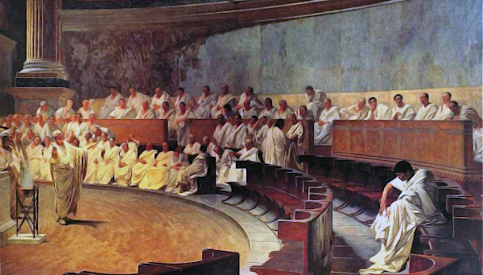

Den Nil hinauf und übers Meer
Das Reich im Süden
Schon zu Zeiten von Pharao Ptolemaios I. wurden immer wieder Gedanken zu einer Eroberung der Kushiten im Süden laut geäußert. Besonders die Hohepriester des Amun-Re wollten die Khemetisten unter der Herrschaft der meroitischen Galestsiden in die Obhut der ägyptischen Pharaonen überführen. Doch Ptolemios wurde Zeit seiner Regierung immer wieder mit schwerwiegenderen inneren Konflikten konfrontiert. Gerade die nach dem Übertritt des Herrschers zum ägyptischen Glauben verärgerten griechischen Familien versuchten immer wieder Unruhe in den Regierungskreisen zu schüren. Darunter war am lästigsten und wohl auch am gefährlichsten der argwöhnische und kalte Menidas, ein Sprössling aus dem Hause der Sostheniden. Dieser hatte nicht nur eine tiefe Abneigung gegen alles nichtgriechische, sondern hatte nach der seiner Meinung nach ungerechtfertigten Übergehung seiner Person bei der Verteilung der Ämter, einen tiefen und nicht zu bändigenden Hass auf Ptolemaios entwickelt.

In der Folge hatte eben dieser Menidas mit den Mitteln, die seiner Familie aus dem Olivenölhandel zur Verfügung standen immer wieder versucht eigene Truppen aufzustellen und Heerführer auf seine Seite zu ziehen. Einer jener abtrünnigen Generale war der tapfere jedoch auch rachsüchtige Hekataios, welcher, da er einer der fähigsten Strategen im Heer war, einen großen Teil der schweren Fußtruppen kommandierte. Eben jener junge Hekataios ging nun offen auf die Angebote des Menidas ein und revoltierte offen gegen die Oberhoheit des Ptoelmaios, welcher dem Hekataios einmal wegen seiner korrupten Natur den Posten des Hatjya, des Aufsehers des Heeres, entzogen hatte. Nun hätte man durchaus erwarten können das Ptolemaios als Pharao diese Situation mit militärischen Mitteln zu lösen versucht hätte, doch dieser wollte es möglichst vermeiden, dass die eigenen Truppen gegeneinander kämpfen müssten, denn ein Bürgerkrieg hätte das Land durchaus zerreißen können. So brachte Ptolemaios seinerseits Geldmittel auf, um die Veteranen des Hekataios auf seine Seite zu ziehen. Dies gelang ihm zwar nur bei einem Teil der Truppe, was jedoch genügte um die Ambitionen des Meidas endgültig zu beerdigen.

Es waren dem Illoyalen Ränkeschmied schlicht nicht genügend Soldaten geblieben, um Ptolemaios I. ernsthaft zu bedrohen. Nun hätte sich dieser durchaus Richtung Süden wenden können, jedoch erlitt der Pharao zu eben dieser Zeit eine reihe Körperlicher gebrechen. Es war die alte Wunde an der Hüfte, welche ihm immer mehr zu schaffen machte. Die nie vollständig verheilte Wunde riss immer wieder auf und eine schlimme Infektion führte schließlich zu einem raschen Niedergang der Gesundheit des betagten Herrschers. Als dieser dann im fünfzehnten Jahre nach seiner Krönung starb, musste sich sein Sohn, Ptolemaios Keraunos, zunächst neuen Problemen entgegenstellen. Diesmal waren es nicht etwaige hellenischen Familien die einen Aufstand gegen die Herrschaft des neuen Pharao anstrebten, sondern gerade die Schwestern des Keraunos, die sich anschickten ihren Bruder die Krone streitig zu machen. Da sie sich allerdings auch untereinander nie einige wurden, wer denn anstelle des Keraunos das Land beherrschen sollte, verlief sich ihre angestrebte Rebellion schnell im Sande.
Nach all diesen Unwägbarkeiten war nun endlich der Weg frei für eine militärische Kampagne Richtung Süden. Allerdings hatten die Kushiten die Zeit nicht einfach müßig verstreichen lassen. In der Hauptstadt Meroe war man durchaus gefeit vor einem Angriff aus dem Norden. So wurde nicht nur das Heer auf ansehnliche 30.000 Mann aufgestockt, sondern auch noch eine Reihe von Befestigungen entlang des Nil errichtet, welche den Vorstoß feindlicher Heere lange aufzuhalten vermochten. Da sich außerdem zu beiden Seiten des Nil die unzugängliche Wüst erstreckt, können diese von großen Streitkräften auch nicht einfach umgangen werden. Daher mussten nun erst einmal das Aufgebot an den südlichen Grenzen aufgestockt werden, um dem Feind eine ebenbürtige Streitmacht entgegenzustellen und auch die Versorgung dieser Truppen zunächst einmal sichergestellt werden. Keraunos höchstselbst kommandierte dabei eine der Streitkräfte, welche nach Kush vordringen sollten und zwei der besten Heerführer, die schon seinem Vater lange gedient hatten sollten die anderen Heeresteile kommandieren.
Dabei sollte die Kavallerie, welche sich auf etwaige fliehende Feinde stürzen sollte und bei günstiger Gelegenheit schnell zur Hauptstadt vorrücken könnte von Naravas Galestus geführt werden. Dieser hielt sich trotz seiner 83 Jahre immer noch exzellent im Sattel und war selber meroitischer Abstammung, kannte sich also im feindlichen Geländer hervorragend aus und sollte im Verlaufe des Feldzuges nach eigenen Gutdünken entscheiden, wie weit er es sich getraute, seine Berittenen in die gegnerischen Gefilde zu führen, nachdem die Festungen erst einmal gefallen wären. Naravas war immer loyal gewesen und hatte sich auch in den Zeiten der größten Not ein verlässlicher Gefolgsmann erwiesen. Obwohl ihm viele schon aufgrund seiner schwachen Gesundheit und seines hohen Alters immer wieder schon im Grabe gesehen hatten, hatte er sich fast schon auf wundersame weise jedes Mal erholt und führte nun seine Reiterei mit disziplinierter und harter Hand.
Wie es zu erwarten war, zogen sich die Kushiten zunächst mit ihren Einheiten tief in ihr eigenes Land zurück, um der Wüste möglichst viel Arbeit zu überlassen. Allerdings hatte ihre an den Ufern installieren Festungen große Makel, was die Verteidungsfähigkeit von der Flussseite aus betraf. Daher ließ Keraunos eine aus mehreren Schiffen bestehenden Damm an der Längsseite der großen Festung von Khashtum errichten und mit Hilfe von Leitern die schlecht bemannten und bewaffneten Mauern dort stürmen. Dies führte zu einem schnellen Fall der Festung und der Weg ins Landesinnere war somit frei. Daher folgte nun Naravas mit der Reiterei den sich auf dem Rückzug befindlichen Feinden und stellte diese in der Nähe von Shut, wo diese sich gerade auf eine Überquerung des Flusses vorbereiteten und ihr Heer daher in vollkommener Unordnung vorgefunden wurde. Die kushitischen Streitkräfte konnten dem schnellen Anstürmen der Kavallerie nichts entgegensetzen und wurden nahezu vollkommen vernichtet. Nur einige Hundert von ihnen konnten sich über den Fluss retten und setzten ihre Heillose Flucht am anderen Ufer fort. Naravas allerdings kümmerte sich nicht mehr um diese versprengten Truppen, die ihm kaum noch gefährlich werden konnten und ließ seine Berittenen weiter ins Landesinnere vordringen.
Dabei wollte er zunächst die Provinzhauptstadt Napata einnehmen und sich dort zunächst reorganisieren und verpflegen. Danach wollte er allerdings sofort weiterreiten, um den zweiten Teil des feindlichen Heeres stellen zu können, bevor sich diese mit den zuvor zersprengten Truppen hätten vereinigen können. Er fand den Gegner zur Schlacht bereit auf der Höhe von Kurgus und wählte für die größtenteils in geordneter Schlachtlinie bereitstehenden Gegner eine Umgehungstaktik und wollte den Feind von mehreren Seiten mit kleineren Kavallarieattacken zusetzen, sodass dieser gezwungen wäre seine Linien aufzulösen wobei er die entstehende Unordnung auszunutzen gedachte. Nachdem die Schlacht schon einige Zeit andauerte und die ersten Linien des Gegners nach und nach durch die immer wieder aus verschiedenen Richtungen heranpreschende Reiterei dezimiert worden waren, kam endlich eine größere Bewegung in die Linien des Feindes. Diese Gelegenheit durch sein Geschick und seine Erfahrung gewahr werdend, suchte Naravas nun schnell die Entscheidung. Schnell befahl er einigen seiner Gruppenführer in die entstehenden Lücken vorzustoßen und so einzelne Verbände des Gegners zu isolieren und aufzureiben. Nachdem dies geschehen war, dauerte die Schlacht nur noch kurze Zeit an. Nach und nach zerbrachen nun die feindlichen Linien und vielen schlussendlich vollkommen in sich zusammen.
Mit beiden feindlichen Heeren größtenteils vernichtet, war der Weg für Naravas nun frei nach Meroe. Mit seiner schnellen Reiterei würde er sicherlich viel schneller dort eintreffen, als alle seine Feinde und hätte dann leichtes Spiel mit der nur unzureichend befestigten Stadt. Nachdem die wichtigsten Städte und Festungen besetzt waren, blieb den Kushiten nichts anderes übrig als zu kapitulieren. Der Feldzug wurde zu einem glorreichen Ende geführt und Ptolemaios Keraunos veranstaltete einen prächtigen Triumphzug in Alexandria und in Memphis.
Pharao Thorakis
Wie ihre Mutter und ihre Großmutter zuvor nahm Thorakis ihren Platz auf dem Thron Ägyptens ein. Obwohl sie wegen ihrer liebevollen Art von vielen geliebt wurde, fielen von Anfang an düstere Schatten über ihre Herrschaft. Auch ihre Mutter hatte schon oft auf die Arglosigkeit von Thorakis hingewiesen und ihr fähige und loyale Berater zur Seite gestellt, damit sie in den Ränkespielen der Macht nicht allzu schnell den Kürzeren ziehen würde. Doch schon einige Tage nach ihrer Thronbesteigung versuchten einige Gruppierungen bei Hofe einen Umsturz zugunsten ihres Bruders, seines Zeichens General der Armeen des Deltas und Vetter des Aufsehers der Heere, herbeizuführen.

Thorakis hatte ihm bei ihrer Krönung viele Freiheiten gewährt, welche dieser nun so weit wie möglich auszunutzen gedachte. Im Heer hatte er viele Befürworter, denn Thorakis wurde im Allgemeinen als zu weich und zu nachgiebig angesehen, um Ägypten zu beherrschen und das Land gegen seine Feinde zu verteidigen. Xanthos dagegen galt als hartgesottener Kämpfer und disziplinierter Anführer. Daher besaß er besonders in den Reihen der Hauptleute und Heerführer großen Rückhalt. Zusammen mit Nicodemos stellte Xanthos also eine mächtige Streitmacht auf und stellte somit schnell eine Gefahr für Thorakis dar. Diese ließ sich jedoch keineswegs von dem Verrat ihres Bruders einschüchtern. Denn an Mut fehlte es ihr keineswegs, obwohl viele in ihrem Umfeld das angenommen hatten. Daher gedachte sie persönlich mit dieser Angelegenheit fertig zu werden, noch bevor ihr Bruder und seine Verbündeten zu handeln bereit wären.

Mit Hilfe ihrer Berater schickte sie Botschaften an all jene Hauptleute, deren Loyalität zu ihrem Bruder höchstens auf Gewohnheit und gelegentlichen Sold beruhte und versprach ihnen Aussichtsreiche Positionen und höhere Gehälter. Schon nach wenigen Tagen schrumpfte somit das Heer der Thronanwärter in sich zusammen. Zusätzlich aber wählte Thorakis die besten Zeitpunkte um mit jenen wankelmütigen Heerführern persönlich zu reden, die sich zu Anfang auf der Seite der sicheren Sieger wähnten, nun aber immer mehr ihre Felle davonschwimmen sahen. Daher konnte sie auch mit ihrem rhetorischen Geschick einen Großteil von diesen davon zu überzeugen, die Sache ihres Bruders fallen zu lassen und sich stattdessen auf ihre Seite zu stellen. In der Folge versuchte Xanthos zwar noch immer seine Ansprüche auf den Thron durchzusetzen, hatte aber immer weniger Erfolg und fand für seine Ideen immer weniger Gehör. Bald schon schleppte er sich selbst demütig vor Thorakis Thron und flehte um Gnade und bat um Verzeihung für sein unüberlegtes und vorschnelles Handeln. Auch in dieser Situation zeigte sich die Gutmütigkeit und Arglosigkeit der Herrscherin, denn sie gewährte ihren Bruder ein weiteres Kommando, diesmal allerdings weit weg an den südlichen Grenzen des Reiches.

Doch hatte Thorakis in dieser Situation recht gehandelt, denn seither erfüllte Xanthos seine Aufgaben zur ganzen Freude der Herrscherin und war es zufrieden ein paar tausend Mann sein Eigen zu nennen.
Allerdings ereignete sich bald eine weitere Krise. In der Absicht die umliegenden Länder näher kennenzulernen, beschloss Thorakis nämlich eine Reise in die Kyreneika und nach Griechenland zu unternehmen. Diese Gelegenheit nutzten die Gegner der Pharaonin, um erneut einen ihnen genehmeren Kandidaten auf den Thron zu befördern. Durch gefälschte Befehle wurden einige der treuen Heerführer und Admiräle abberufen und durch ambitionierte Emporkömmlinge ersetz, die ihre gesamte Laufbahn und Positionen den Verschwörern verdankten und somit ihrer Sache treu ergeben waren. Außerdem beschlossen diese Personen eigenmächtig einige der ägyptischen Gesetze zu ändern, um sich mit Hilfe ihrer Besitzungen noch weiter zu bereichern. Durch ihre Intrigen und Machenschaften wurden nahezu alle Verwaltungsstrukturen des Reiches durcheinandergewirbelt, weshalb auch die noch vor Ort befindlichen loyalen Beamten und Priester kaum etwas unternehmen konnten, als die chaotischen Zustände so gut wie möglich einzudämmen.
Nur ein Machtwort des Herrschers hätte zu dieser Zeit noch eine Wende bringen können, doch Thorakis verweilte noch immer in der ferne und Nachrichten an sie wurden manipuliert oder abgefangen. Einzig und allein der Tatsache, dass sich die aufsässigen Kräfte, in ihrer Zahl und Macht weit überlegen, einfach nicht auf einen geeigneten Kandidaten für den Thron hatten einigen können, war es geschuldet, dass es zu dieser Zeit keinen Umsturz in Ägypten gab. Als Thorakis dann nach Alexandria zurückkam herrschte dort beinahe Anarchie. Doch die Pharaonin blieb ruhig und setzte sofort ihre Leibgarde ein, um die Ordnung in der Stadt wiederherzustellen. Alsbald wurden Boten in alle Himmelsrichtungen ausgesandt, um Nachrichten einzuholen und zu überbringen. Das gesamte Niltal entlang sollten alle noch loyalen Provinzen die alten Gesetze wieder einführen und die Befehle der Verräter für null und nichtig erklären. Im Zuge dieser Aktion ließen schon einige der vormals durch die falschen Anweisungen irritierten Gouverneure ihr vorhaben fallen und kehrten zur gewohnten Ordnung zurück. Den Rest der Abtrünnigen konnte man leider nur mit klingender Münze überzeugen oder durch unverhohlene Drohungen. Doch waren auch die letzten illoyalen Provinzen bald wieder auf Thorakis Seite getreten. Was die Verschwörer angeht, so hatten sich diese aus Furcht beim Eintreffen der Herrscherin in alle Winde zerstreut. Viele von ihnen schienen in die Nachbarländer oder auf die entlegenen Inseln geflohen zu sein, denn seither hatte Niemand mehr irgendetwas von ihnen gehört.
Die Belagerung Roms
Um den Gerüchten ein Ende zu machen, sie sei zu schwach und zu weich für den Thron, hatte Thorakis einen Plan gefasst. Sie wollte die große militärische Macht des westlichen Meeres herausfordern. Sie wollte einen Krieg gegen Rom führen. Jenes Rom, welches in den letzten Jahrzehnten von einer ernstzunehmenden Regionalmach zu einer gewaltigen Großmacht herangewachsen war, indem es sich nach und nach die gebiete seiner Nachbarn einverleibt hatte.

Um ein derart gewagtes Vorhaben in die Tat umzusetzen, musste zunächst sichergestellt werden, dass die empfindlichen und angreifbaren Gebiete im Delta vor einem römischen Vergeltungsangriff gefeit wären. Daher musste zunächst eine Flotte aufgebaut werden, die nicht nur der römischen standhalten, sondern diese vollkommen von den Meeren verdrängen konnte. Doch dafür musste zunächst ein Rohstoff ins Land geschafft werden, der im gesamten Reich leider all zu oft abkömmlich war, nämlich Holz. Und damit der Bau der Schiffe im gehobenen Tempo vorrangehen könnte, sollten gleich mehrere Häfen mit Holz beliefert werden. Die Werften wurden somit allesamt bevorzugt mit dem für unser Land kostbaren Material versorgt und schon bald war die Schiffsproduktion im vollen Gange.

Sobald die Flotte auf 230 Triremen angewachsen war, begann man mit den Vorbereitungen für den Feldzug. Man wusste, dass ein paar tausend leichtbewaffnete Fußtruppen nie ausreichen würden, um die Linien und die Mauern Roms zu durchbrechen. Daher wurde für die direkte Konfrontation mit dem Feind eine neue Armee zusammengestellt. Schon seit einigen Jahren hatte man im Delta Kriegselefanten und schwere Truppen zusammengezogen. Diese sollten nun die Speerspitze bilden und einen schnellen Vorstoß auf die große Stadt Rom selbst durchführen. Zunächst aber sollte sichergestellt werden, dass die gegnerische Flotte keinen Überraschungsangriff auf Ägypten unternehmen könnte, deshalb sollte der Großteil der Flotte zunächst ohne Truppen voraussegeln um die feindlichen Häfen zu überfallen und wenn möglich die gegnerische Hauptflotte zu stellen.

Da sich diese jedoch auch nach mehreren Monaten und dutzenden überfallenen Hafenstädten nicht aus der Reserve locken ließ, sollte nun die Hauptstreitmacht übersetzen. Auf speziell angefertigten Schiffen wurden die Kriegselefanten verladen, diese hatten auf den neuen Transportern ausreichend Platz, Nahrung und Ruhestätten. Auch die schweren Fußtruppen sollten an Bord der neuen Transporttriremen gehen und wenn möglich gleichzeitig mit den Kriegselefanten in der Nähe von Rom von Bord gehen. Die gesamte Operation musste natürlich gut koordiniert sein, denn es war gewiss, dass die Römer seit Kriegsbeginn große Heeresverbände um ihre Hauptstadt zusammengezogen hatten, um diese vor Überfällen zu schützen. Daher sollten die Kapitäne bei der Überfahrt darauf achten, die Flotte möglichst gut beieinander zu halten.

Nach einigen Wochen erreichte dann die Invasionsflotte die italischen Gefilde in der Nähe Roms. Die Hauptflotte war bereits vor Ort, um die Gewässer in der Region zu sichern. Bei Begutachtung des Terrains fiel sofort eine weite Ebene südwestlich der Feindlichen Hauptstadt ins Auge. Nun musste alles sehr schnell gehen. Noch bevor der Gegner sich im Gelände formieren konnte, musste eine starke Einheit an Land geschafft werden, um einen Brückenkopf zu bilden. Diese sollte dann heranrückende Feindverbände zurückhalten und den Kampf mit Hilfe der immer weiter zuströmenden verbündeten Truppen suchen, um den Gegner mit der geballten Macht der Kriegselefanten aufzureiben. Obwohl lange Zeit in der Überzahl, konnte der Feind, wie sich herausstellte, die Linien der gewaltigen Kriegselefanten nicht durchbrechen. Daher ging der Kampf der Landetruppen sehr gut für die unsrigen aus und der Weg nach Rom war weitestgehend frei.

Sofort sollte nun der Vorstoß auf die Hauptstadt durchgeführt werden, da die Zeit nun für den Gegner spielte. Dieser konnte sich auf eigenen Boden verstärken und neue Truppen heranführen und gleichzeitig war die Versorgung eines so gewaltigen Heeres auf feindlichen Boden besonders schwierig. Gerade die Kriegselefanten verzehrten dermaßen viele Ressourcen, dass das Heer schnell zusammenschrumpfte. Daher musste nun schnell eine Entscheidung her und es wurde beschlossen, dass Rom in einem direkten Sturmangriff genommen werden sollte. Da für ein solches Unternehmen die Elefanten kaum von nutzen waren, wurden diese zurückgehalten, um das Lager zu schützen. Die schweren Fußtruppen sollten versuchen, die Wälle zu erstürmen und die Stadt mit einem Gewaltangriff einzunehmen. Doch hatten sich die Heerführer bei der Attacke auf die Mauern in der Anzahl der benötigten Truppen um ein paar tausend Mann verschätzt. So kam es, dass kurz bevor die Besatzung der Stadt Rom niedergekämpft war, der Ansturm der Unsrigen nachließ und die Verteidiger der Stadt aufatmen ließen.

Nachdem dieser Versuch missglückt war, war es den Heerführern klar, dass man nun keine Gelegenheit mehr haben würde, die Stadt zu nehmen. Denn eine langatmige Belagerung würde das Heer nicht durchhalten können. Daher entschloss man sich zu den Schiffen zurückzuziehen. Nach zwei Schlachten und einer gescheiterten Erstürmung waren die Männer erschöpft und die unzureichenden Ressourcen taten ihr Übriges um die Moral der Soldaten zu zersetzen. Doch auch der Rückzug sollte nicht ohne Komplikationen ablaufen, denn der Feind hatte seine Verbände neu formiert und weitere Verstärkungen herbeigeschafft. Die nun folgenden unumgängliche Schlacht gipfelte allein deshalb nicht in einer endgültigen Vernichtung des Heeres, da die verbliebenden Kriegselefanten immer noch in der Lage waren den Gegner lange genug auf Abstand zu halten, um die Armee sicher auf die Schiffe zu bekommen. So waren es immerhin noch knapp zwei Fünftel des Heeres, die daraufhin sicher in die Heimat zurücksegeln konnten.

Wenn auch das Hauptziel dieser Kampagne verfehlt worden war, so konnte man doch Zehntausende Bewohner der italischen Küstenstädte als Sklaven nach Ägypten verschleppen. Auch die Leistung der Soldaten in der Ferne wurde gewürdigt, hatten sie doch mehrere Male in Unterzahl den Feind auf feindlichen Terrain zurückschlagen können, bevor sie sich geschwächt von den Strapazen doch noch hatten zurückziehen müssen. Da der Krieg außerdem mit einer großen Summe Geldes, welche von den Römern an unser Land gezahlt worden war, beendet wurde, konnte man das ganze Unternehmen als einen Sieg Ägyptens ansehen. Das eingenommene Geld wurde alsbald für einen prächtigen Triumphzug in Alexandria wieder ausgegeben, auf dem große öffentliche Feiern und Gelage folgten. Dies alles Versöhnte nicht nur das Volk von Alexandria mit der Herrscherin, sondern ließ auch viele der Nörgler und Zweifler verstummen, die Thorakis für zu weich und zurückhaltend gehalten hatten.


